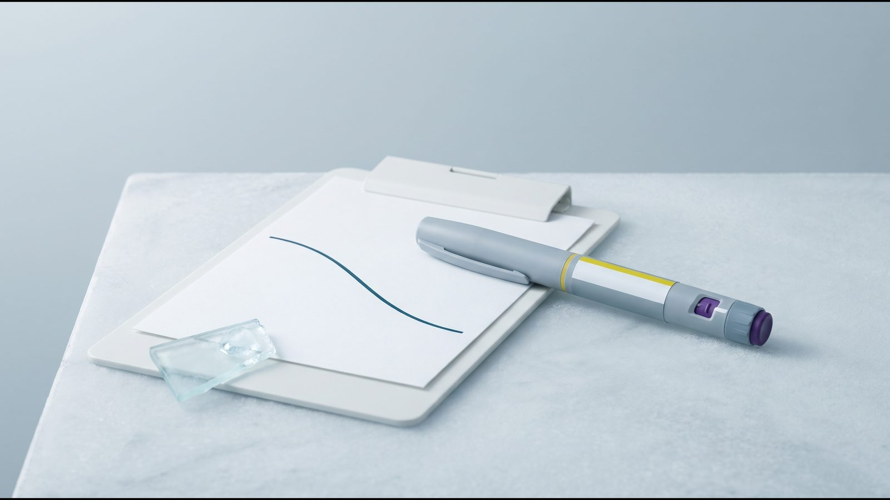

Результаты Mounjaro® (тирзепатид): что показали исследования SURMOUNT

Результаты Mounjaro® коротко: сколько теряли в SURMOUNT
Результаты Mounjaro® (тирзепатид) по весу оценивали в программе исследований SURMOUNT. В SURMOUNT-1 (NEJM, 2022) взрослые с ожирением или избыточным весом без диабета за 72 недели потеряли в среднем 15,0 %, 19,5 % и 20,9 % массы тела на дозах 5, 10 и 15 мг, а на плацебо 3,1 %. У людей с диабетом 2 типа (SURMOUNT-2, Lancet, 2023) средняя потеря на дозах 10 и 15 мг была меньше: 12,8 % и 14,7 %. Это средние значения по группам, а не результат, на который можно рассчитывать заранее.
Тирзепатид действует на рецепторы двух гормонов, GIP и GLP-1, которые влияют на аппетит и уровень сахара в крови. Показания и дозы здесь приведены по европейской инструкции (EMA). Для контроля веса, в том числе его снижения и удержания, тирзепатид показан взрослым с индексом массы тела (ИМТ) от 30 или от 27 до 30 при наличии хотя бы одного связанного с весом заболевания, вместе со сниженной калорийностью рациона и большей физической активностью.
Программа SURMOUNT: кто участвовал, дозы и сроки
| Исследование | Кто участвовал | Доза | Срок | Изменение массы тела (журнал) |
|---|---|---|---|---|
| SURMOUNT-1 (NEJM, 2022) | 2539 взрослых без диабета с ИМТ ≥30 или ≥27 и осложнением; средний вес 104,8 кг | 5, 10, 15 мг | 72 недели, из них 20 недель постепенного повышения дозы | −15,0 / −19,5 / −20,9 %; плацебо −3,1 % |
| SURMOUNT-1, 3 года (NEJM, 2025) | 1032 участника с предиабетом | 5, 10, 15 мг | 176 недель | −12,3 / −18,7 / −19,7 %; плацебо −1,3 % |
| SURMOUNT-2 (Lancet, 2023) | 938 взрослых с диабетом 2 типа и ИМТ ≥27; средний вес 100,7 кг | 10, 15 мг | 72 недели | −12,8 / −14,7 %; плацебо −3,2 % |
| SURMOUNT-3 (Nat Med, 2023) | 579 взрослых, которые за 12 недель интенсивной программы образа жизни потеряли ≥5 % | максимальная переносимая | 72 недели после распределения по группам | −18,4 %; плацебо +2,5 % |
| SURMOUNT-4 (JAMA, 2024) | 670 взрослых после 36 недель тирзепатида (−20,9 %) | 10 или 15 мг | еще 52 недели | продолжение −5,5 %; замена на плацебо +14,0 % |
| SURMOUNT-5 (NEJM, 2025) | 751 взрослый без диабета | тирзепатид 10/15 мг против семаглутида 1,7/2,4 мг | 72 недели | −20,2 % против −13,7 % |
В SURMOUNT-1 не меньше 5 % массы потеряли 85 %, 89 % и 91 % участников на дозах 5, 10 и 15 мг против 35 % на плацебо, не меньше 20 % — 50 % и 57 % на дозах 10 и 15 мг против 3 %. Значит, от 9 до 15 из 100 участников на тирзепатиде не достигли даже 5 %. Окружность талии, по данным EMA, уменьшился на 14,6–19,9 см против 3,4 см на плацебо.
Менялись не только килограммы. По сводным данным EMA для SURMOUNT-1, систолическое давление снизилось на 8,1 мм рт. ст. против 1,3, триглицериды на 27,6 % против 6,3 %, инсулин натощак на 46,9 % против 9,7 %. За три года у участников с предиабетом диабет 2 типа развился у 1,3 % на тирзепатиде против 13,3 % на плацебо (NEJM, 2025).
Самыми частыми нежелательными явлениями в SURMOUNT-1 были желудочно-кишечные, в основном легкие или умеренные; появлялись они чаще всего во время повышения дозы. Из-за нежелательных явлений лечение прекратили 4,3 %, 7,1 % и 6,2 % участников на дозах 5, 10 и 15 мг против 2,6 % на плацебо. Подробнее в статье Побочные эффекты Mounjaro®.
Прямое сравнение с семаглутидом (SURMOUNT-5) было открытым: участники знали, какой препарат получают. Разбор этого исследования есть в статье Mounjaro® или Ozempic®.
Почему цифры в журналах и в инструкции EMA разные
У одного исследования часто две версии результата. Основной анализ в журнальных статьях учитывает всех распределенных по группам участников вместе со временем после прекращения лечения. Инструкция EMA учитывает в основном период, пока участники получали препарат, поэтому ее цифры обычно немного больше, примерно на 1–3 процентных пункта. Для SURMOUNT-3 цифра EMA (−21,1 %) совпадает с журнальной оценкой для тех, кто продолжал лечение.
| Показатель | Журнал | Инструкция EMA |
|---|---|---|
| SURMOUNT-1, 5 мг, 72 недели | −15,0 % | −16,0 % |
| SURMOUNT-1, 15 мг, 72 недели | −20,9 % | −22,5 % |
| SURMOUNT-2, 15 мг, 72 недели | −14,7 % | −15,7 % |
| SURMOUNT-3, от распределения по группам до 72-й недели | −18,4 % | −21,1 % |
| SURMOUNT-4, плацебо с 36-й по 88-ю неделю | +14,0 % | +14,8 % |
| SURMOUNT-5, тирзепатид, 72 недели | −20,2 % | −21,6 % |
Эти цифры друг другу не противоречат, но смешивать их нельзя. Для реалистичных ожиданий ближе журнальная оценка, потому что она учитывает и тех, кто прекратил лечение. В этой статье рядом с числами указано, откуда они.
Состав тела: что теряли — жир или мышцы
По подисследованию SURMOUNT-1 со сканированием состава тела (DXA, 160 участников; Diabetes Obes Metab, 2025), примерно 75 % потерянного на тирзепатиде веса приходилось на жир и 25 % на безжировую массу, как и на плацебо. Что это значит для мышц, белка и тренировок, разобрано в статье Как сохранить мышцы на Ozempic® и Mounjaro®.

Ограничения данных и почему ваш результат может быть другим
Программа SURMOUNT большая, но у нее есть границы, важные для личных ожиданий.
- Популяция. В SURMOUNT-1 брали взрослых без диабета со средним ИМТ 38,0; для ИМТ выше 40 данных о лекарствах мало (EASO, 2025).
- Диабет 2 типа. На тех же дозах 10 и 15 мг потеря в SURMOUNT-2 была меньше, чем в SURMOUNT-1: 12,8–14,7 % против 19,5–20,9 %. Это разные исследования, так что сравнение ориентировочное.
- Доза. Средняя потеря росла от 5 к 15 мг, хотя между 10 и 15 мг разница небольшая. По инструкции EMA поддерживающие дозы — 5, 10 и 15 мг; какая из них нужна и стоит ли повышать, решает врач с учетом эффекта и переносимости.
- Срок. Основные результаты получены за 72 недели, трехлетние данные есть только для участников с предиабетом. По post-hoc анализу SURMOUNT-1 (Clin Obes, 2025), среди участников, которые получали препарат по схеме и потеряли не меньше 5 %, медиана выхода на плато по собственному определению авторов составила 24–36 недель в зависимости от ИМТ; раньше 24-й недели плато в этом анализе не оценивали. Что это значит, объяснено в статье Плато на Ozempic® и Mounjaro®.
- Реальная практика и перерывы. Вне исследований эффект препаратов этой группы несколько ниже (ACLM, ASN, OMA, TOS, 2025). После отмены вес возвращался: в SURMOUNT-4 те, кого перевели на плацебо, за 52 недели набрали 14,0 %, подробнее в статье Вес после отмены Ozempic® и Mounjaro®.
[КОММЕНТАРИЙ ВРАЧА: что врач обсуждает с пациентом в начале терапии тирзепатидом о реалистичных ожиданиях по весу и как оценивает промежуточные результаты]
Частые вопросы
Сколько можно похудеть на Mounjaro®?
Назвать число заранее исследования не позволяют. В SURMOUNT-1 средняя потеря за 72 недели составляла 15,0–20,9 % в зависимости от дозы у людей без диабета, а в SURMOUNT-2 у людей с диабетом 2 типа 12,8–14,7 %. От 9 до 15 из 100 участников на тирзепатиде не достигли даже 5 %.
Зависит ли результат от дозы?
В среднем да: в SURMOUNT-1 потеря росла от 5 к 15 мг, но разница между 10 и 15 мг составила 1,4 процентного пункта. Из-за нежелательных явлений на дозах 10 и 15 мг лечение прекращали чаще, чем на 5 мг. Дозу подбирает врач по эффекту и переносимости, самостоятельно ее не меняют.
Почему в инструкции EMA цифры больше, чем в статьях?
Инструкция EMA учитывает в основном период, пока участники получали препарат, а основной анализ в журналах учитывает и время после его прекращения. Для SURMOUNT-1 на дозе 15 мг это −22,5 % в инструкции и −20,9 % в NEJM. Обе цифры корректны, но сравнивать между собой стоит только цифры из одного источника.
Можно ли сравнивать цифры SURMOUNT и STEP?
Напрямую нет: эти программы проводили в разных популяциях, с разной длительностью и способами расчета. Среди исследований SURMOUNT и STEP прямое сравнение есть только в SURMOUNT-5: за 72 недели −20,2 % на тирзепатиде против −13,7 % на семаглутиде 1,7–2,4 мг, то есть в дозах Wegovy®, а не Ozempic®. Это исследование было открытым: участники знали, какой препарат получают.
Что дальше
Перед стартом терапии эндокринолог оценивает показания, сопутствующие болезни и лекарства, а во время курса следит за весом, самочувствием и переносимостью и корректирует дозу. Как устроена терапия Mounjaro® в клинике, описано на странице Mounjaro®.
Источники
- Mounjaro: EPAR Product Information. European Medicines Agency. https://www.ema.europa.eu/en/documents/product-information/mounjaro-epar-product-information_en.pdf
- Jastreboff AM et al. Tirzepatide Once Weekly for the Treatment of Obesity (SURMOUNT-1). N Engl J Med, 2022;387:205–216. https://doi.org/10.1056/NEJMoa2206038
- Jastreboff AM et al. Tirzepatide for Obesity Treatment and Diabetes Prevention. N Engl J Med, 2025;392:958–971. https://doi.org/10.1056/NEJMoa2410819
- Garvey WT et al. Tirzepatide once weekly for the treatment of obesity in people with type 2 diabetes (SURMOUNT-2). Lancet, 2023;402:613–626. https://doi.org/10.1016/S0140-6736(23)01200-X
- Wadden TA et al. Tirzepatide after intensive lifestyle intervention in adults with overweight or obesity: the SURMOUNT-3 phase 3 trial. Nat Med, 2023;29:2909–2918. https://doi.org/10.1038/s41591-023-02597-w
- Aronne LJ et al. Continued Treatment With Tirzepatide for Maintenance of Weight Reduction in Adults With Obesity: The SURMOUNT-4 Randomized Clinical Trial. JAMA, 2024;331(1):38–48. https://doi.org/10.1001/jama.2023.24945
- Aronne LJ et al. Tirzepatide as Compared with Semaglutide for the Treatment of Obesity (SURMOUNT-5). N Engl J Med, 2025;393(1):26–36. https://doi.org/10.1056/NEJMoa2416394
- Look M et al. Body composition changes during weight reduction with tirzepatide in the SURMOUNT-1 study of adults with obesity or overweight. Diabetes Obes Metab, 2025;27(5):2720–2729. https://doi.org/10.1111/dom.16275
- Horn DB et al. Time to weight plateau with tirzepatide treatment in the SURMOUNT-1 and SURMOUNT-4 clinical trials. Clin Obes, 2025. https://doi.org/10.1111/cob.12734
- McGowan B, Ciudin A et al. Framework for the pharmacological treatment of obesity and its complications from the European Association for the Study of Obesity (EASO). Nat Med, 2025;31:3229–3232. https://www.nature.com/articles/s41591-025-03765-w
- Mozaffarian D et al. Nutritional priorities to support GLP-1 therapy for obesity: a joint Advisory from ACLM, ASN, OMA and TOS. Am J Clin Nutr, 2025;122(1):344–367. https://pubmed.ncbi.nlm.nih.gov/40450457/
Материал носит информационный характер и не заменяет консультацию врача. Препараты назначает врач после консультации.
Читайте также